Dr Wesley Chan
Results · body transformation and cosmetic medicine
Evolve X results can be shown openly. This gallery only ever holds patients of Dr Wesley Chan, shared with their consent, with the number of sessions noted. Results vary from person to person, and suitability is decided at your doctor-led consultation.
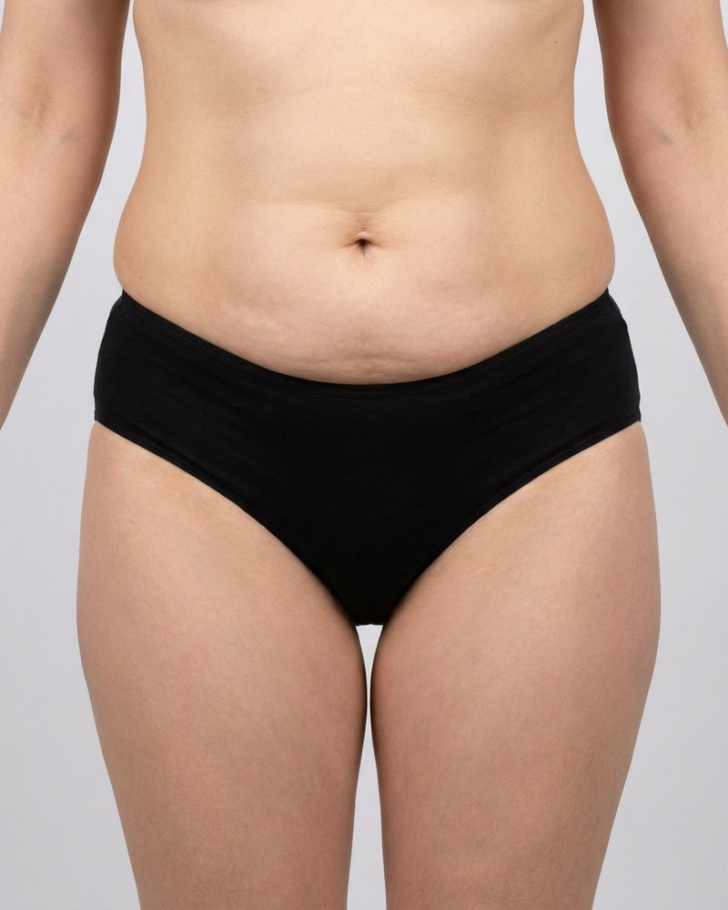
Before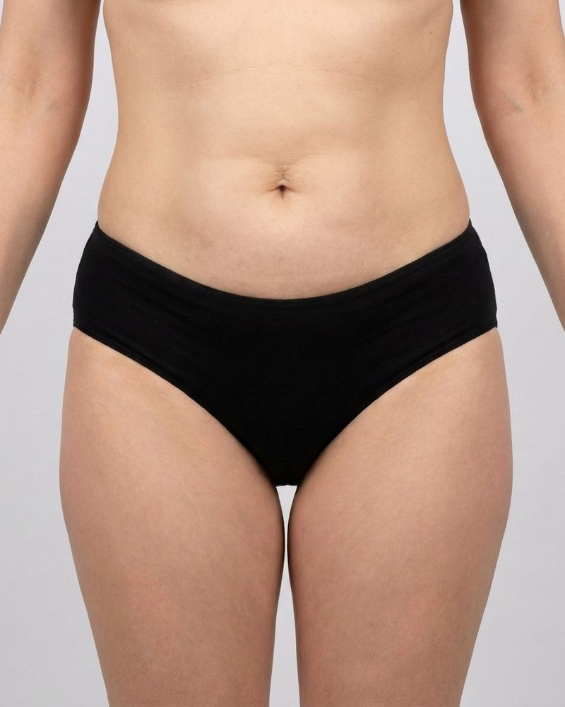
AfterPlaceholder image. Fat, skin and muscle treated together over a course of six to eight sessions, one area at a time.
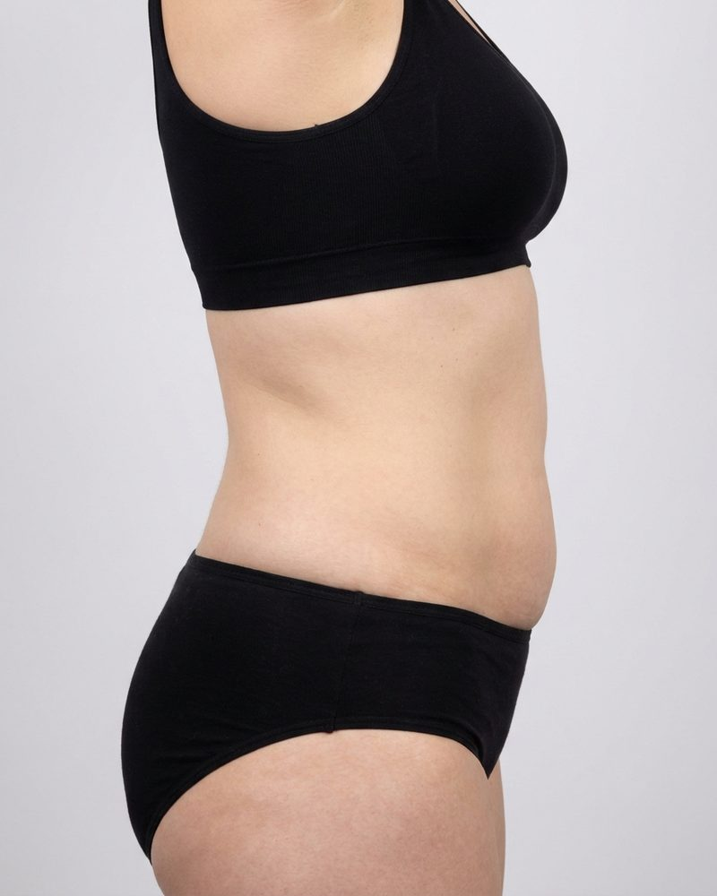
Before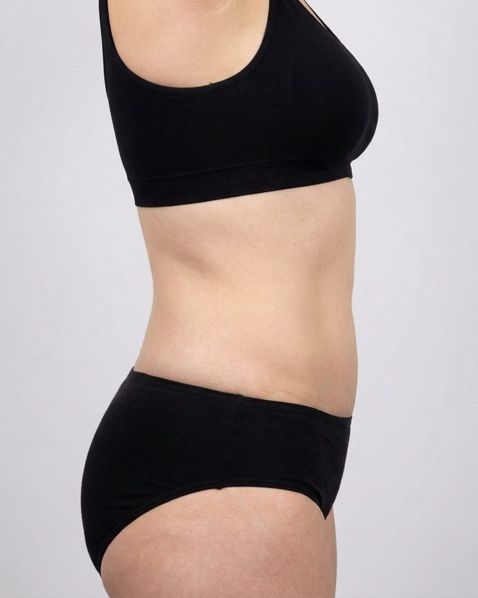
AfterPlaceholder image. Flanks and love handles, treated as their own area once the tummy has had its course.
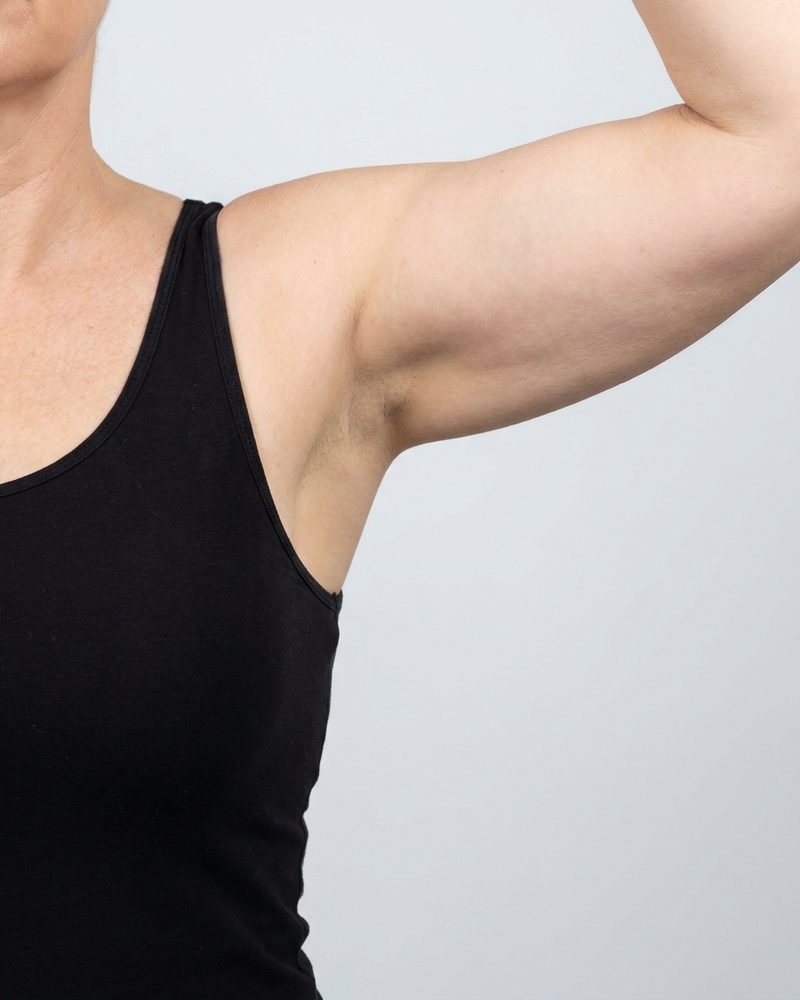
Before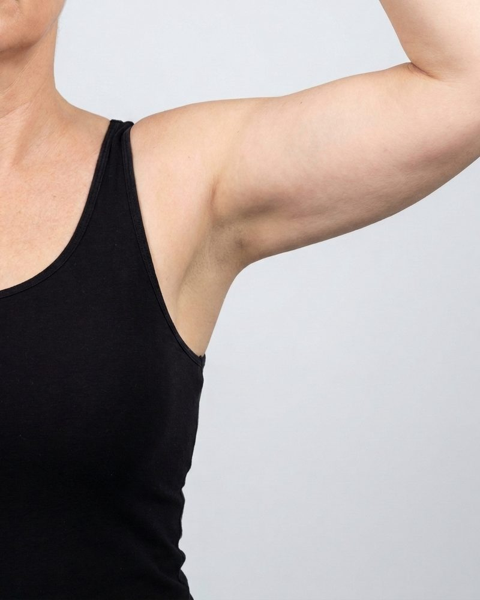
AfterPlaceholder image. Skin laxity and fullness on the upper arm, a common request after significant weight loss.
Cosmetic medicine results involve prescription-only treatments, so in line with Australian advertising rules they are shared after a consultation, with a code from Dr Wesley.
This gallery is shared with patients after a consultation, in line with Australian advertising rules for prescription-only cosmetic treatments. Enter the code from your consultation to view.
That code does not match. Check the note from your consultation.
This gallery only ever holds patients of Dr Wesley Chan, shared with their consent. Results vary from person to person, and what is right for you is decided together in your consultation.
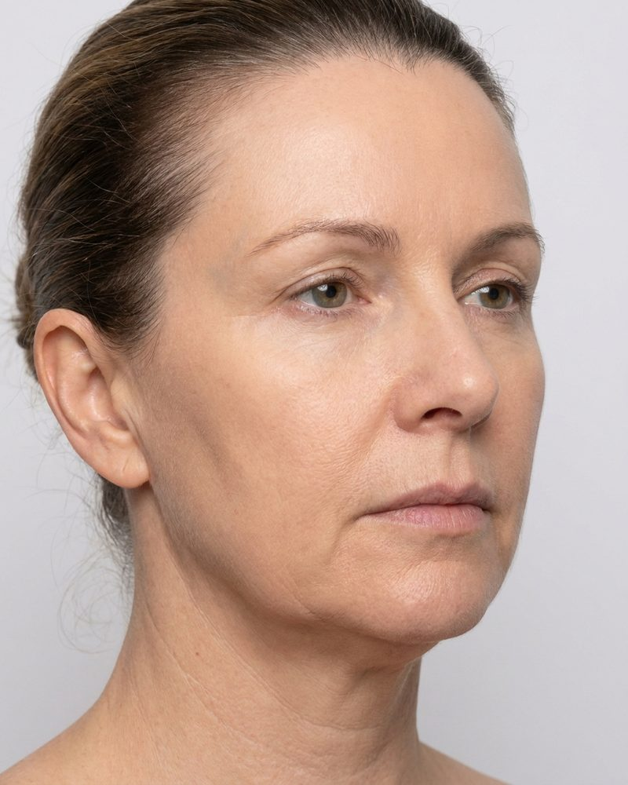
Before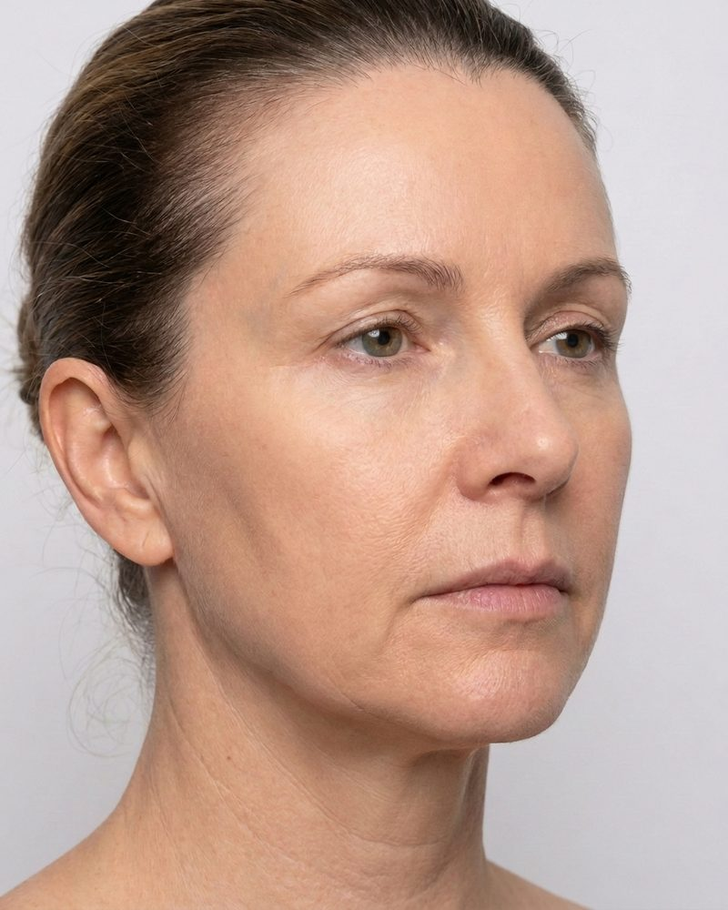
AfterPlaceholder image. Facial volume and definition after significant weight loss, decided at consultation.
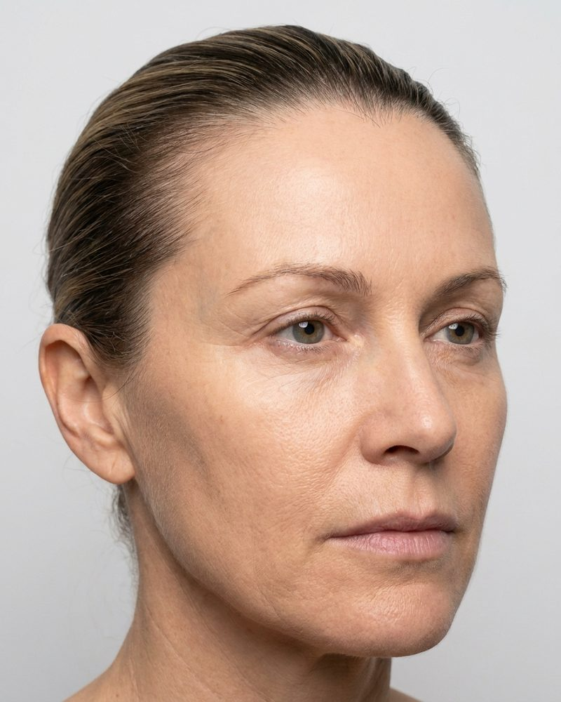
BeforePlaceholder image. Concern-led caption, treatment discussed only in your consultation.
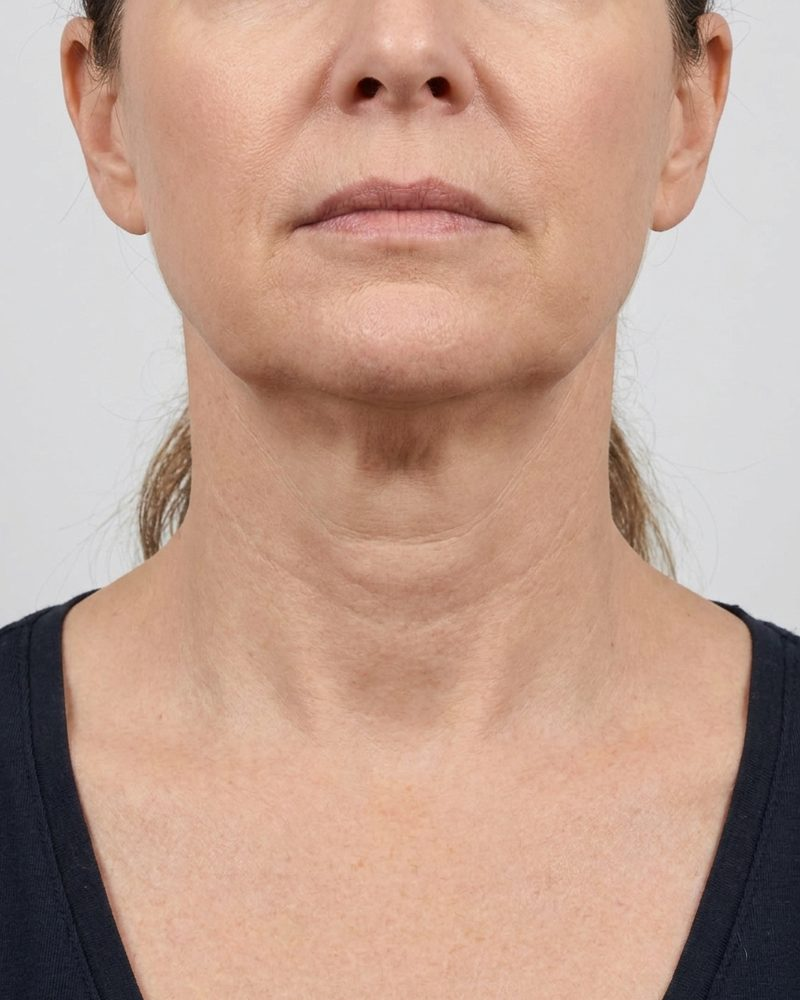
Before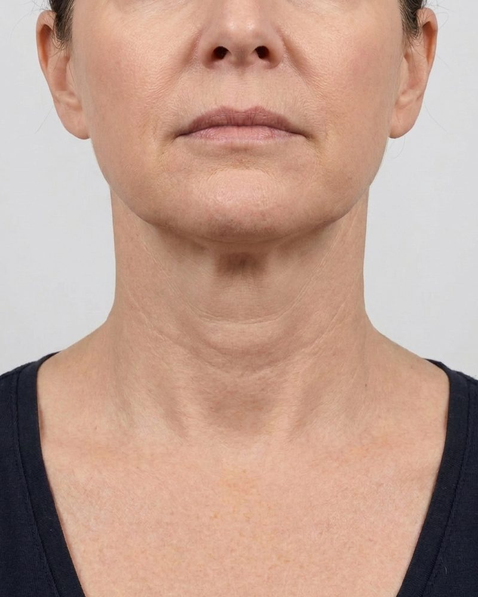
AfterPlaceholder image. The fullness under the chin that diet did not shift, discussed at consultation.
Consented patient photo drops in here. The gallery grows as cases are added from the clinic.